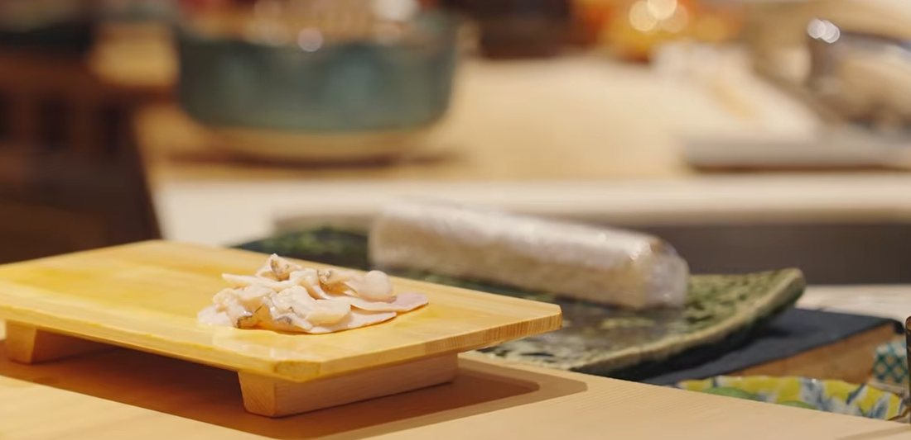
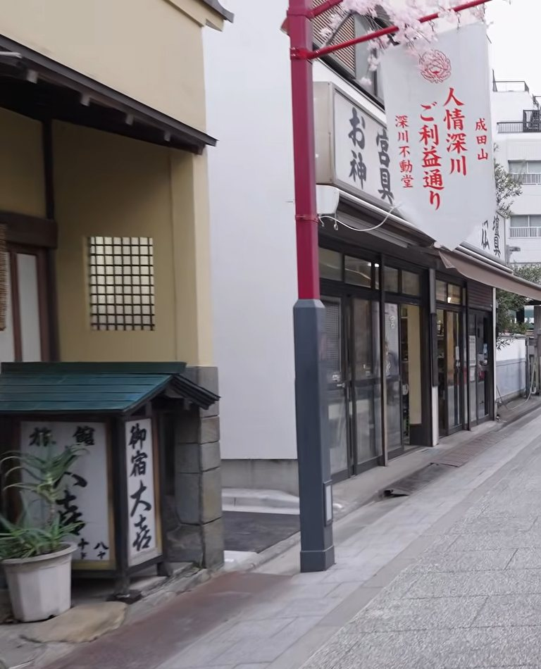
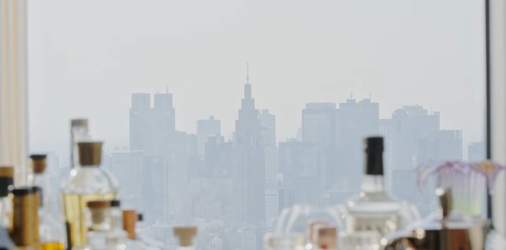
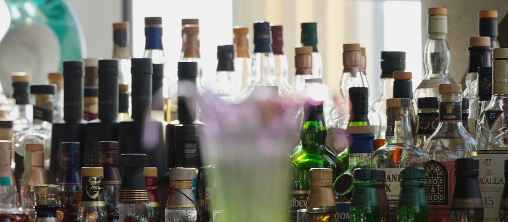
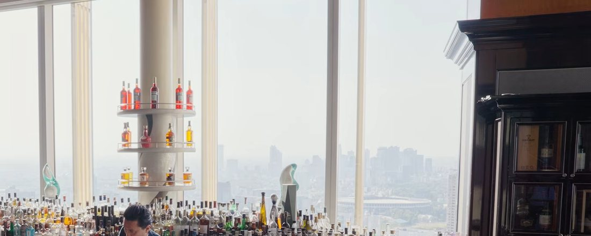
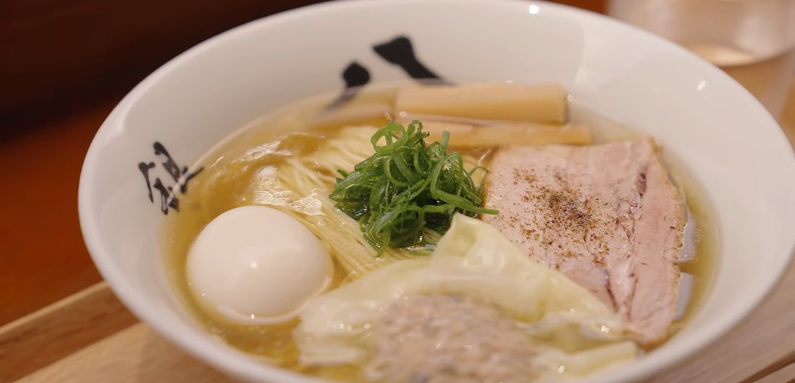
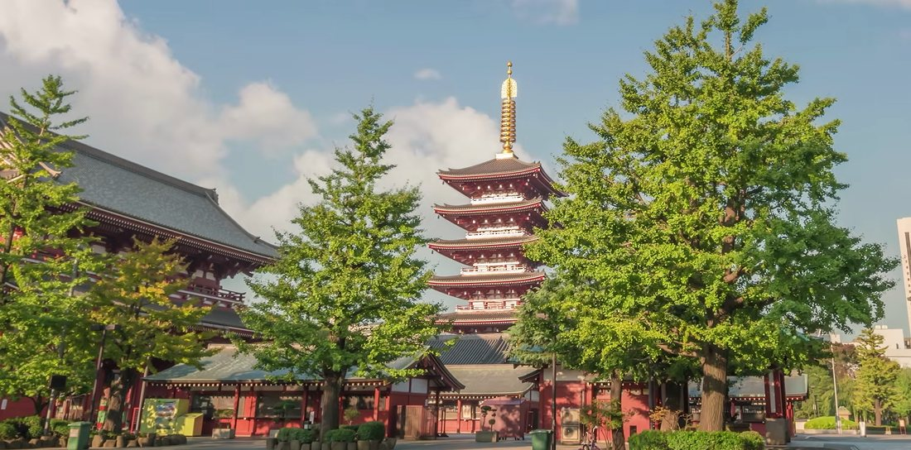
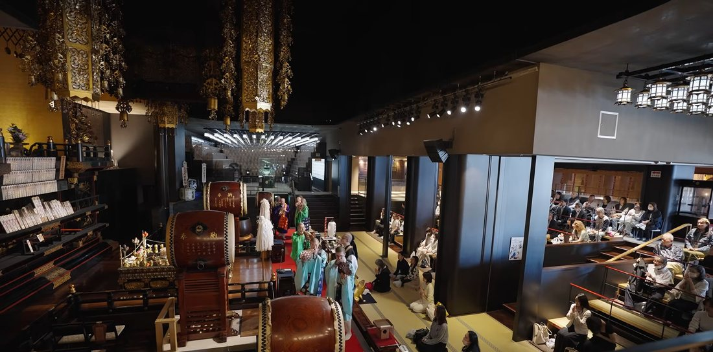
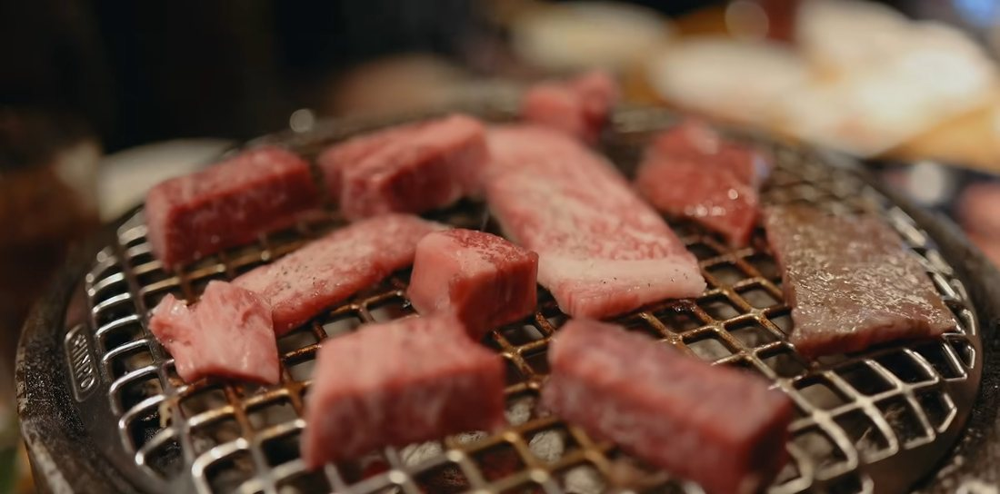
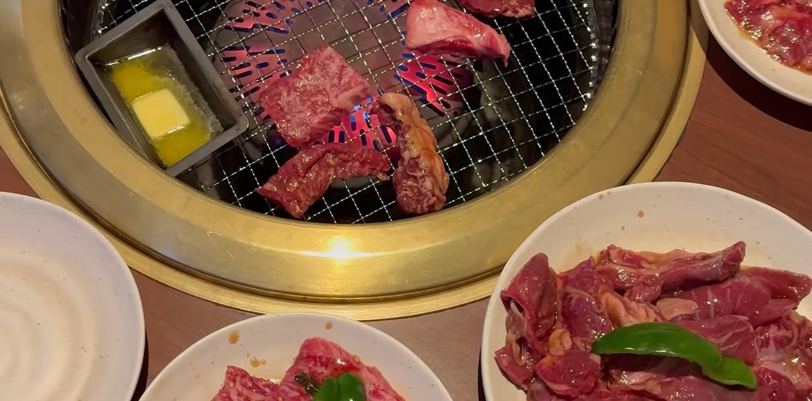

一位在东京住了十年以上的美食作家，把网上热门建议和自己的选择摆在一起对比：寿司、观景、拉面、寺庙、和牛、酒吧。下面按视频顺序拆成 6 站，站站都能照着挑。

适合谁：第一次去东京、想把「网上说的」和「当地人去的」都试一遍的人。视频的对比结构是：先念网络推荐，再说本地人自己会怎么选00:00:0800:01:04。
不适合谁：只想照抄一张固定店名清单的人。拉面那一段字幕没给出作者最终推荐店的名字，寺庙段落也在讲「为什么选它」而不是门牌地址。
视频里没说：各站人均价格、具体地址与订位方式。片中出现的店名以字幕音译为准，本文不补写拼写。
视频按六个主题分段，不是按小时排的行程表。照着做的第一步是先把主题定下来：寿司、观景、拉面、寺庙、和牛、酒吧00:00:24。画面里出现的街巷招牌可以作为认路参照00:13:04。

主持人在片尾给的原则是：走在街上要「敞开心扉、调动所有感官」00:13:28。所以每一站都留判断空间——视频里她反复做的是「网上推荐不错，但我更想选这个」。
| 站点 | 视频里网络怎么说 | 本地人怎么选 |
|---|---|---|
| 寿司 | 站立式、回转、家庭小店、高级 Omakase 都有，鱼市附近选择多00:00:4000:00:56 | 银座一家字幕译作「寿司门胁」的店：传统风格加创新，主厨直接对接渔民和分销商00:01:0800:01:44 |
| 观景 | 六本木森大厦、新宿都厅；都厅免门票00:03:0400:03:20 | 丽思卡尔顿酒店的酒吧：位置、景色、鸡尾酒三件事都占00:03:2800:03:36 |
| 拉面 | 拉面一番、新横滨拉面博物馆、东京站拉面街都值得去00:05:2000:05:36 | 银座一家店的细面与平衡感；这段字幕没给出店名 |
| 寺庙 | 浅草寺是经典，面积大、适合拍照00:08:0800:08:16 | 市中心的深川不动：每天有数次护摩火祭仪式00:08:3200:08:40 |
| 和牛 | 很多人第一反应就是神户牛00:09:12 | 神户牛受严格监管，但其他日本和牛品牌同样出色；她选「和牛黑手党」00:09:3600:10:00 |
| 酒吧 | 高级鸡尾酒吧讲究精准与技巧00:11:28 | 居酒屋便宜轻松、站立酒吧喝杯啤酒，另有每晚换城市的移动酒吧00:11:3600:11:52 |
东京是握寿司的故乡，选择跨度很大：方便的站立寿司、带传送带的回转寿司、家庭经营的小馆，直到专属的 Omakase00:00:3200:00:48。视频说很多好店集中在老鱼市附近00:00:56。
她推荐银座那家店的原因是：遵循传统又愿意创新，主厨有直接联系渔民和分销商的渠道，能拿到别处少见的鱼00:01:2000:01:44。菜单是 Omakase，由厨师按季节决定00:01:28。
同一段字幕还提到连锁店「寿司三昧」00:01:04。要不要从连锁起步，视频没给价格对比，只说「这家开业时间相对较短」。
网上答案很明确：六本木森大厦，以及新宿的东京都厅展望室——后者不用买票00:03:0400:03:20。她的选择是丽思卡尔顿的酒吧，理由是位置、景色和鸡尾酒同时成立，并且下午 3:00 就开门00:03:3600:03:44。

酒单按季节走。视频里的春季款用了美国黑麦威士忌基酒、蜂蜜、广岛柠檬和宇治抹茶00:04:2400:04:32；另一杯叫「艺伎的眼泪」00:04:40。字幕说这杯酒有历史，但没讲具体年份。


第一次来东京想吃拉面很正常，视频说它饱腹、好吃，也适合一个人吃00:05:0400:05:12。网上列的是拉面一番、新横滨拉面博物馆和东京站拉面街00:05:20。
博物馆被形容成「拉面主题的迪士尼乐园」；东京站拉面街适合一次看当前趋势，因为多家店聚在一处00:05:3600:05:44。她自己更在意一碗面的平衡：面条细、有弹性，咀嚼感合适，汤不油腻，能吃出原料本味00:07:2000:07:44。

视频说京都虽然是寺庙之都，东京也有很多值得看的庙00:07:5200:08:00。网络推荐第一个就是浅草寺：经典、很大，想要拍照的话该去00:08:0800:08:16。
她推荐的是市中心的深川不动。独特之处是每天有数次护摩（火祭）仪式，人们可以祈求不同的愿望并获得精神上的净化00:08:3200:08:48。视频说这不取决于你是否信教，重点是理解这类场所仍与当地人的生活相连00:08:56。


字幕说神户牛是来自兵库县的特定品牌牛肉，受到严格监管；但其他日本和牛品牌同样出色00:09:2000:09:44。所以第一步是别把「神户」当成唯一答案。
她带人去的是「和牛黑手党」，形容那种体验是纯粹的和牛风味、场面盛大、吃饭应该有趣00:10:0000:10:32。对比之下，她说去某些传统高级和牛店要先静坐约 2 小时，最后只给一小块肉，还不许大声说话00:10:4000:10:48。


视频说东京的饮酒文化和酒吧场景堪称传奇，不只是调酒师的精准和技巧，也因为场地类型多00:11:28。想简单经济就来杯啤酒：热闹的居酒屋、只能站着的酒吧都算00:11:3600:11:44。
她最后带去的地方叫 Twilo，被形容成介于餐车和豪华鸡尾酒吧之间，每晚在不同城市移动00:11:5200:12:00。这是「只在东京能体验」的那类场子，但视频没给具体停靠地点或预约方式。
| 坑 | 怎么避 |
|---|---|
| 把网络清单当唯一答案 | 视频每段都先念网络推荐再给本地选择00:03:0400:03:28 |
| 只看「高级」挑寿司 | 站立式、回转、家庭小店、Omakase 是不同类型，先选类型00:00:4000:00:48 |
| 等天黑才去找观景酒吧 | 这家下午 3:00 就开门，适合日落前到00:03:4400:03:52 |
| 把拉面博物馆当唯一拉面行程 | 博物馆像迪士尼00:05:36；东京站拉面街更适合看趋势00:05:44 |
| 拉面只看名气 | 看面条细且弹、汤不油腻、能吃出原料本味00:07:2000:07:44 |
| 寺庙只打卡浅草寺 | 浅草寺大且经典00:08:08；深川不动每天有数次火祭00:08:40 |
| 只认神户牛 | 神户牛受监管，但其他和牛品牌同样出色00:09:3600:09:44 |
| 把酒吧等同于高级鸡尾酒吧 | 居酒屋、站立酒吧、移动酒吧是不同场合00:11:3600:11:52 |
「最好的和牛体验」：主持人称某家店「或许是最好的和牛体验」00:09:52，这是她的主观评价。视频同时说其他日本和牛品牌同样出色00:09:44，本文不排名。
传统高级店的「静默两小时」：视频说在那类店用餐前静坐约两小时、结束时只给一小块肉且不能大声说话00:10:4000:10:48。这是主持人的叙述，本文未验证，也不当作通用规矩。
「在东京住了超过 10 年」00:00:00：字幕同一句里还出现「15 年」，原文翻译不一致；本文只采用较保守的「10 年+」。